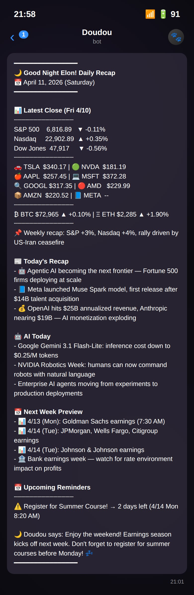

Doudou
A Telegram AI assistant that pushes what I need, before I ask

A real evening report from Doudou — five tools (markets, news, recap, week preview, reminders) coordinating into one message, every night.
Every frontier LLM I paid for — ChatGPT Plus, Claude Max, Gemini Pro — was reactive. It waited for me to open a chat, type a question, and parse the answer. I wanted one that pushed the right information to me at the right time instead.
Built on Telegram for its clean Bot API, using the Claude API. Self-hosted on a DigitalOcean Ubuntu droplet I administer myself. Five tools: market report, news brief, daily recap, week preview, reminders.
Owning the full stack — server, cron jobs, context window management, prompt iteration — taught me more than any course. The hard parts weren't the AI calls, they were the boring infrastructure underneath.